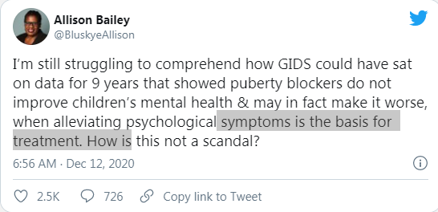

Rob Hoogland Taken Prisoner
March 25th, 2021
I needed to give a little more backstory to the Rob Hoogland case, so here it is.
Post Millenial:
TDC_ARTICLE_START
The father discovered that the school had been showing his daughter SOGI 123, the going sexual and gender identity education materials in British Columbia which amounts to transgender ideology "propaganda videos." In the grade 7 yearbook, the child was referred to by a different name. The school counsellor changed the child's name without telling her parents. The school "socially transitioned" the biologically female child on its own initiative, with the input of a gender ideologue psychologist, Dr. Wallace Wong.
When the father accompanied his child to a consultation with Wong, the psychologist advised the pubescent child to take testosterone. Wong referred the child to the endocrinology unit at the local hospital. Meanwhile, Hoogland was looking for mental health solutions to help the child without drugs.
TDC_ARTICLE_STOP
Wallace Wong
Shocking that an HIV positive creature such as this would abuse an innocent child.
TDC_ARTICLE_START
A gender identity activist lawyer, Barbara Findley, represented the child in court. Justice Boden decided that the child's best interests lay in destroying her long-term health to make her body appear more like that of a male.
TDC_ARTICLE_STOP
Barbara Findley
Ah yes, this crazy bitch. Writes her name all in lower case and throws a fit when she doesn't get her way. Lady is legitimately insane.
TDC_ARTICLE_START
He said, "Here I am, sitting there as a parent, watching a perfectly healthy child be destroyed, and there's nothing I can do but sit on the sideline according to Justice Boden at the time. I can only affirm, or get thrown in jail."
Boden's court held that the father's consent was irrelevant. The judge went a step further, declaring that the girl's parents must affirm their child's "gender identity," and refer to the child as though the fact of her being a gender non-conforming biological female who identifies as transgender means that the child is a boy. If he did not, the parents would be implicated of the criminal offense of family violence.
TDC_ARTICLE_STOP
New Judge Francesca Marzari
I'm 99% sure they mispelled Justice Gregory Bowden's name. Unfortunately, while I used to have a picture of him, I can no longer find one online. He retired in 2019 anyway, and this case got assigned to insane feminist lady Francesca Marzari. Ultimately I've come to believe it doesn't really matter who is involved, they're all guilty.
TDC_ARTICLE_START
After the hearing, the father gave an interview to The Federalist saying that people cannot change sex, and that mega-doses of exogenous testosterone would damage his vulnerable, biological female child's health.
Justice Mazari then summarily convicted the father of family violence on the basis that he had declined to use his child's preferred masculine pronouns. Mazari authorized a warrant for the father's arrest in the event that he ever used the correct sex pronouns to refer to his daughter again.
In 2019, the father abided by the court order, hoping to get his daughter off testosterone. However, in January 2020, the highest court in British Columbia declared that the child should continue to take testosterone. It also imposed a conduct order on Hoogland that he must continue to refer to his biological female child by male pronouns.
The father said that "They've created a delusion, and they're forcing parents to live in this delusion."
"What happens when the bubble explodes and the delusion ends… She can never go back to being a girl in the healthy body she should have had… These kids don't understand. What kind of 13 year old is thinking about having a family and kids?" He said, lamenting his child's stolen future.
TDC_ARTICLE_STOP
I feel bad for having to point out that Rob Hoogland is a near perfectly sympathetic character. The type of person that our political party would love to have. Yes, it's sad we need to discuss this in the context of child abuse, but this is war after all.
TDC_ARTICLE_START
"What kind of father would I be if, in ten years time she's detransitioning, and she asks me 'why didn't you do anything to stop this? None of your stuck your neck out for me back then.'" He said.
The case continues, as does his child's medical "transition."
TDC_ARTICLE_STOP
TDC_ARTICLE_START
Before surrendering to the court, the father felt compelled to visit his childhood homes, and shared some of his thoughts with this writer.
"Perhaps saving children is a dream . . . but I don't think so! As I was driving I saw children walking their dogs, I saw children playing together, and I saw a generation that needs their parents more than ever! I visited all my family homes... places where I grew up as a child. I remembered how much I loved my own parents and how much I needed their protection."
TDC_ARTICLE_STOP
Thank god these perverts are keeping this man from his child. The amount of damage such a man could do to an innocent child. Much better she be placed in the hands of experts like Wallace Wong.
What follows next is actually very good info on the damage that "puberty blockers," do to children.
TDC_ARTICLE_START
In December, the [English] high court handed down the decision in Keira Bell's judicial review of the state's gender identity clinic, the Tavistock. It held that children of 16 and under were incapable of giving informed consent to puberty blockers.
In the judicial review hearing, the court asked the Tavistock why it had no long-term data on the outcomes for the children to whom they gave puberty blockers. It responded that that it had a 2011 study, but it was unpublished pending peer review.
The Tavistock then published the data the day after the High Court handed down its judgement, and not in a peer-reviewed journal.
The data confirmed that, between 2011-2020, a rapidly increasing and disproportionate number of girls were referred to the gender clinic with a diagnosis of "gender dysphoria."
The clinic had known for nine years that puberty blockers were both ineffective for psychological distress, and harmful to physical health. It chose to keep that information from patients, public, and apparently from the court itself.

The court heard evidence that the Tavistock clinic gave children materials which said "as far as we are aware the blockers will not harm your physical or mental development."
The Tavistock's study into puberty blockers confirmed that the allegations of Keira Bell and Mrs. A were well-founded.
The study showed that of the 44 children given puberty blockers, only one did not progress to wrong-sex hormones. The Tavistock has claimed that the two "treatments" are not linked, and that taking blockers does not inevitably place children on the medical pathway to wrong-sex hormones and surgery. That claim has been disproven. Blockers are primers for surgery, with lifelong health impacts, not simply a benign "pause button." They cause long-term damage.
The study also found that medical experiments with puberty blockers did not improve the children's mental health. In fact, the children on puberty blockers felt worse on taking them.
TDC_ARTICLE_STOP
I mean, no shit. We didn't need a study to understand that "puberty blockers," is THEIR terminology for hormonal mutilation. However, it is still somewhat useful to see this truly debunked. So this "treatment," causes harm to children, and sterilizes them.
TDC_ARTICLE_START
The children given blockers also lost critical bone density and height which they can never recover, leaving them vulnerable to osteoporosis and broken bones.
The study was nine years late, in which time thousands of children were primed for "gender affirmation" surgeries, and lumbered with iatrogenic osteoporosis and stunted growth.
It remains to be seen whether the court pursues the matter of the Tavistock's suppression of vital data which could have spared all of those vulnerable children the lifelong effects of puberty blockers.
 All of this begs the question of why Justin Trudeau and Minster David Lametti continue to push Bill C16, knowing full well where it leads: destroying the health of vulnerable children for the sake of a delusion.
TDC_ARTICLE_STOP
All of this begs the question of why Justin Trudeau and Minster David Lametti continue to push Bill C16, knowing full well where it leads: destroying the health of vulnerable children for the sake of a delusion.
TDC_ARTICLE_STOP
 Oh for fuck sakes. No, the Conservative Party does not disapprove of this. You will never actually hear Erin O'Toole denounce this, because that's what his donors want. The disgusting purpose of this Con Media Piece is to make you think through implication that the CPC is against this. 100% they are not.
Oh for fuck sakes. No, the Conservative Party does not disapprove of this. You will never actually hear Erin O'Toole denounce this, because that's what his donors want. The disgusting purpose of this Con Media Piece is to make you think through implication that the CPC is against this. 100% they are not.
All of this begs the question of why Justin Trudeau and Minster David Lametti continue to push Bill C16, knowing full well where it leads: destroying the health of vulnerable children for the sake of a delusion.
TDC_ARTICLE_STOP
Oh for fuck sakes. No, the Conservative Party does not disapprove of this. You will never actually hear Erin O'Toole denounce this, because that's what his donors want. The disgusting purpose of this Con Media Piece is to make you think through implication that the CPC is against this. 100% they are not.